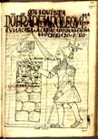
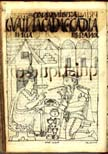
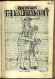
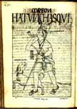
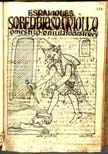
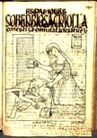
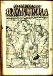
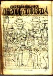
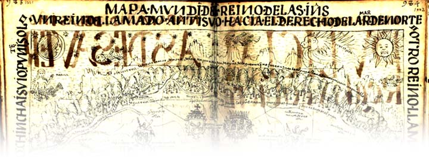

Felipe Guaman Poma de Ayala, Nueva corónica y buen gobierno
(Haz clic en las imágenes para verlas con más detalle. En algunos casos, hacer clic una segunda vez permite ampliarlas aún más.)
El texto de Guaman Poma es una rica fuente histórica no sólo por la abundante información que ofrece sobre las costumbres preincaicas, la historia de la conquista y la sociedad virreinal sino también por las numerosas ilustraciones que acompañan al texto. Como en el caso de cualquier representación artística, no hay que interpretarlas como un reflejo transparente de la "realidad", ya que responden a los fines retóricos del autor y artista. No obstante, las ilustraciones de Guaman Poma —que por otra parte indican su conocimiento de las técnicas europeas del dibujo— son en muchos casos las únicas representaciones gráficas de aspectos de la sociedad andina precolombina y de la del virreinato hechas durante las primeras décadas de la época colonial que conservamos. También es uno de los testimonios escritos más tempranos de la lengua quechua; el texto a menudo incluye palabras y frases en esa lengua, La imagen arriba corresponde a uno de los pasajes en los que Guaman Poma (representado en el centro de la imagen) explica cómo recopilaba la información, visitando distintos territorios del virreinato y entrevistando a miembros de la población indígena. Todas estas imágenes provienen de la edición facsímil publicada en Internet por la Kongelige Bibliotek de Copenhague (Dinamarca), donde actualmente se conserva el manuscrito de Guaman Poma. |
|||
Instituciones incaicas (consejos, secretarios y contables, chasquis) |
|||
CONÇEJO REAL DESTOS REINOS
Conzejo rreal deste rreyno |
SECRETARIO DEL INGA I CONZEJO apo ["señor"] Lliuyac Poma secretario |
||
CONTADOR MAIOR I TEZORERO
Contador y tesorero |
COREON MAIOR I MENOR
correón |
||
{kind=link}
{kind=link}
{kind=link}
{kind=link}
{kind=link}
De la época de la conquista (Atahuallpa preso y ejecutado) |
|||
CONQUISTA |
CONQUISTA |
||
CONQUISTA ¡Dacá oro y plata, indios! los señores principales tapeado le quema
en el Cuzco |
 | CONQUISTA Cay coritacho micunqui? ["¿Es éste el oro que comes?"] Este oro comemos
En el Cuzco |
 |
{kind=link}
{kind=link}
{kind=link}
{kind=link}
Instituciones virreinales |
|||
BUEN GOBIERNO
audiencia real |
COREGIMIENTO |
||
REGIDORES
surococ ["administrador despensero"]
en este rreyno |
 | COREON
churo chasqui "despacho a su magestad deste rreyno" perro de ayuda en este rreyno
|
 |
{kind=link}
{kind=link}
{kind=link}
{kind=link}
Abusos de los españoles |
|||
BUEN GOBIERNO ynca uana cauri, maytam rinqui sapra aucanchiccho mana huchayocta con- cayquita cuchon? ["Inka Wana Qawri, ¿adónde te has ido? ¿Es que nuestro enemigo perverso te va a cortar el cuello a ti, que eres inocente?"] [Túpac Amaru, hijo del Inca Manco Cápac, fue el líder de la última guerra de resistencia contra los españoles, en 1572.] |
COREGIMIENTO
probincias |
||
ESPANOLES
en los pueblos |
 | ESPANOLES
en los pueblos |
 |
CONZEDERACION
soberbia |
 | COREGIMIENTO mestizo . . . mulato . . . yndio tributario Brindes [?], señor curaca corregidor |
 |
{kind=link}
{kind=link}
{kind=link}
{kind=link}
{kind=link}
{kind=link}
Mapa de Tawantinsuyu ("Mapamundi del reino de las Indias") |
|||
|  |
{kind=link}